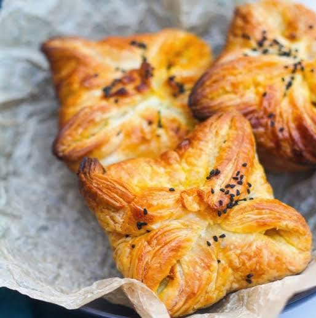
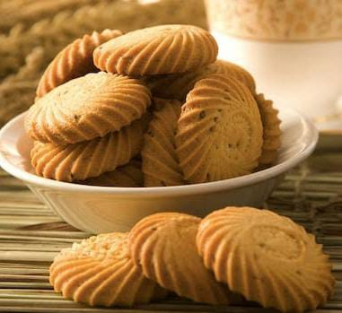

Bajji

- 2 cups gram flour
- 1 teaspoon chili powder
- 1/2 teaspoon turmeric powder
- Salt to taste
- Water
- Vegetables (like onions, potatoes, or spinach)
Instructions: Mix gram flour, chili powder, turmeric powder, and salt. Add water to make a thick batter. Dip sliced vegetables in the batter and deep fry until golden brown.
Puffs
- 1 sheet puff pastry
- Filling of your choice (like vegetables, meat, or cheese)
- Egg wash (1 egg beaten with a little water)
Instructions: Preheat oven to 375°F (190°C). Cut puff pastry into squares. Add a spoonful of filling in the center, fold the pastry over, and seal the edges. Brush with egg wash and bake for 20-25 minutes or until golden brown.
Samosa

- 2 cups all-purpose flour
- 1/4 cup oil
- Potato filling (potatoes, peas, spices)
Instructions: Mix flour and oil, add water to make a stiff dough. Divide into small balls and roll each into a thin oval. Cut in half. Form a cone with each half, fill with potato mixture, and seal the edges. Deep fry until golden brown.
Biscuits
- 2 cups all-purpose flour
- 1/2 cup butter
- 1/2 cup sugar
- 1 teaspoon vanilla extract
- 1/4 teaspoon salt
Instructions: Preheat oven to 350°F (175°C). Cream together butter and sugar. Add vanilla extract. In another bowl, mix flour and salt. Gradually add the dry ingredients to the butter mixture. Roll the dough into small balls, flatten with a fork, and bake for 12-15 minutes or until the edges are golden.